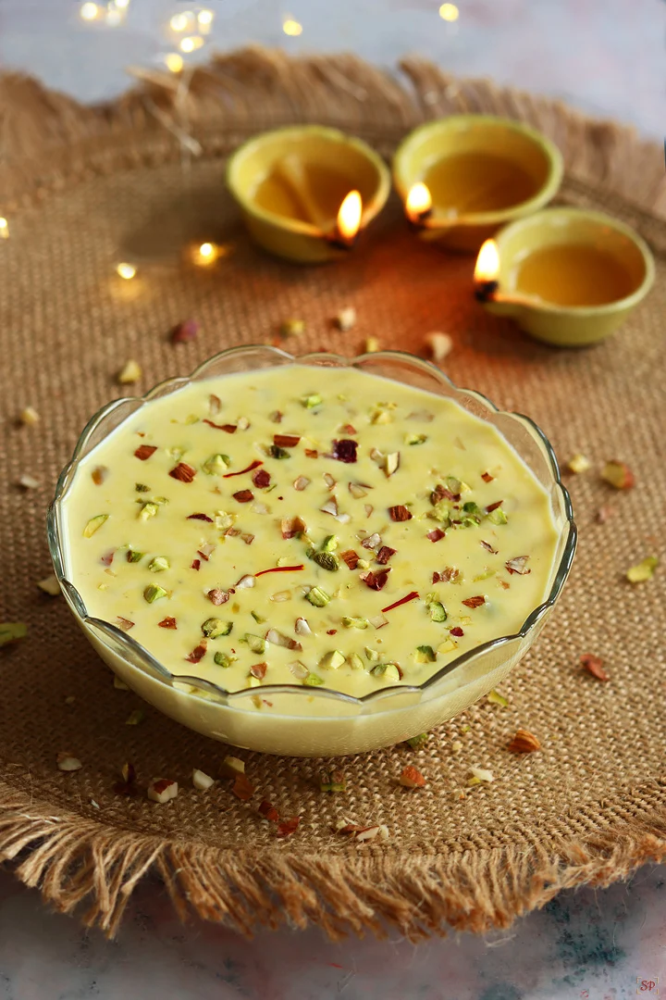

Kitchen Tips
- 🔪Cooking Tips
- 🧼Cleaning Tips
- 🧊Storage Tips
Recipe: Basundi

Ingredients
- 1 liter full-fat milk
- 1/4 cup sugar (adjust to taste)
- 4 to 5 green cardamom pods (crushed or powdered)
- 8 to 10 almonds (sliced or chopped)
- 8 to 10 pistachios (sliced or chopped)
- A few saffron strands (optional)
- 1 tbsp chopped cashews (optional)
- 1 tbsp raisins (optional)
Instructions
- Pour the milk into a heavy-bottomed pan. Bring it to a boil on medium heat.
- Lower the heat and let the milk simmer. Stir every 2 to 3 minutes and scrape the sides of the pan — add the cream back into the milk. This step takes around 30 to 40 minutes until the milk reduces to about half.
- Stir in the sugar and crushed cardamom. Mix well until the sugar dissolves.
- Add almonds, pistachios, and saffron (if using). Let it simmer for another 5 to 10 minutes.
- Let basundi cool down. You can serve it warm or chilled — both ways are delicious!